01
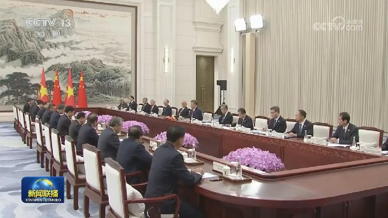
习近平会见越共中央总书记、国家主席苏林
11月17日上午，中共中央总书记、国家主席习近平在深圳会见来华出席亚太经合组织领导人非正式会议的越共中央总书记、国家主席苏林。
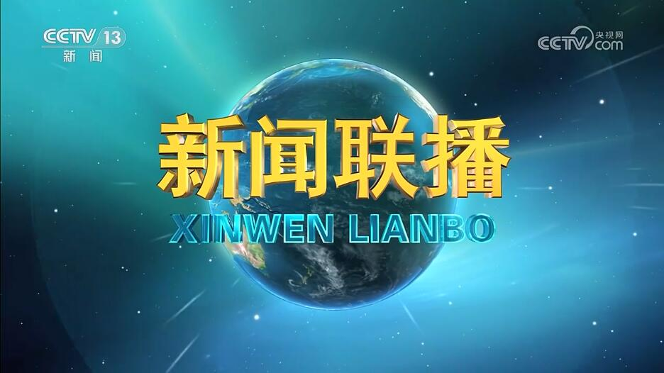

11月17日上午，中共中央总书记、国家主席习近平在深圳会见来华出席亚太经合组织领导人非正式会议的越共中央总书记、国家主席苏林。
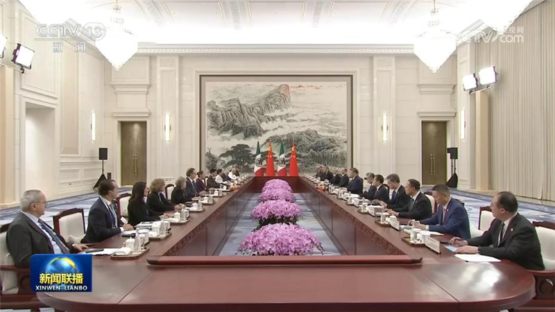
11月17日下午，国家主席习近平在深圳会见来华出席亚太经合组织领导人非正式会议的墨西哥总统辛鲍姆。
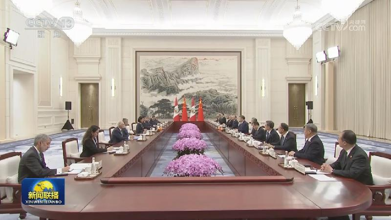
11月17日下午，国家主席习近平在深圳会见来华出席亚太经合组织领导人非正式会议的秘鲁总统藤森庆子。
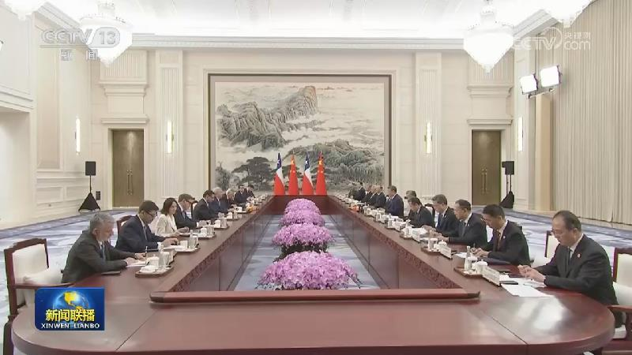
11月17日下午，国家主席习近平在深圳会见来华出席亚太经合组织领导人非正式会议的智利总统卡斯特。
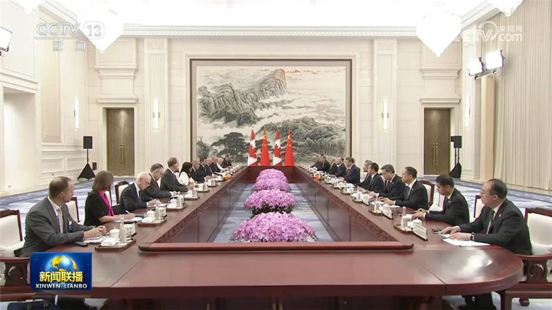
11月17日上午，国家主席习近平在深圳会见来华出席亚太经合组织领导人非正式会议的加拿大总理卡尼。
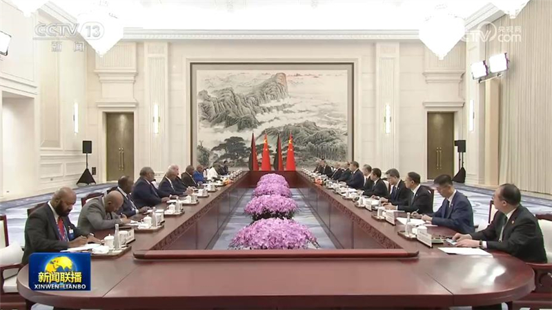
11月17日上午，国家主席习近平在深圳会见来华出席亚太经合组织领导人非正式会议的巴布亚新几内亚总理马拉佩。
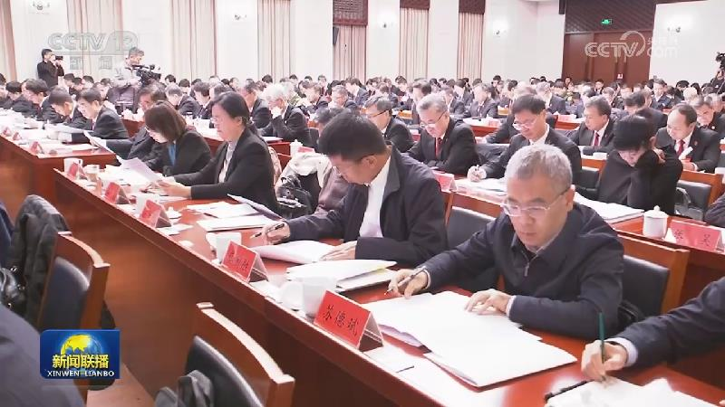
中共中央总书记、国家主席、中央军委主席习近平近日对人民法院工作作出重要指示指出，党的十八大以来，各级人民法院认真履行惩罚犯罪、保护人民，定分止争、维护公正职能，为改革发展稳定提供了有力司法保障。
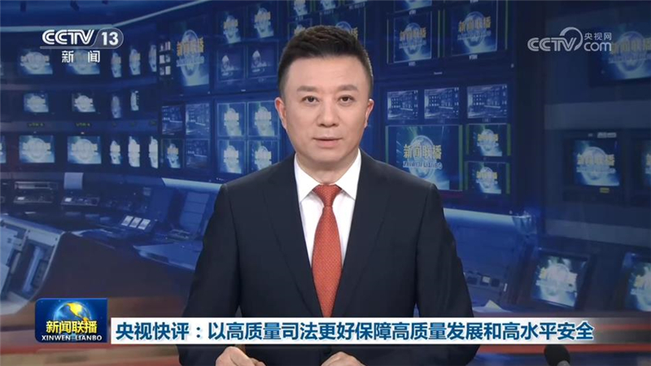
本台今天（11月17日）播发央视快评《以高质量司法更好保障高质量发展和高水平安全》。
11月16日，国家主席习近平致电热莉卡·茨维亚诺维奇、戴尼斯·贝契罗维奇、达丽娅娜·菲利波维奇，祝贺他们就任波黑主席团成员。
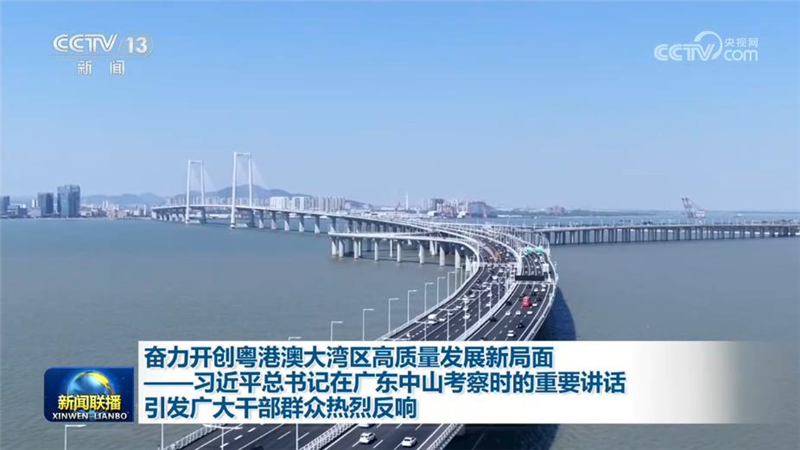
11月16日，习近平总书记在广东省中山市考察时强调，要以持之以恒推进全面从严治党的新成效，更好推动珠江口东西两岸融合发展。广大干部群众表示，要认真学习贯彻落实习近平总书记重要讲话精神，奋力开创粤港澳大湾区高质量发展新局面。
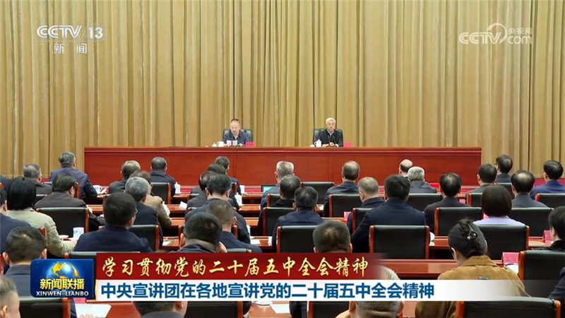
连日来，学习贯彻党的二十届五中全会精神中央宣讲团成员在江西、吉林、湖南宣讲，并深入基层，与干部群众互动交流。
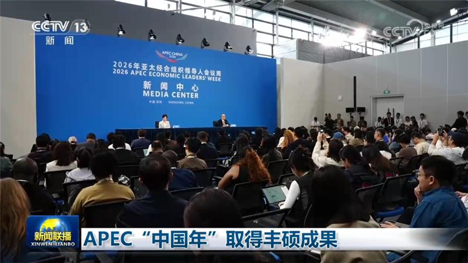
今天（11月17日），2026年APEC领导人会议周新闻中心举办吹风会，介绍APEC“中国年”及亚太经合组织第三十三次领导人非正式会议筹备情况。
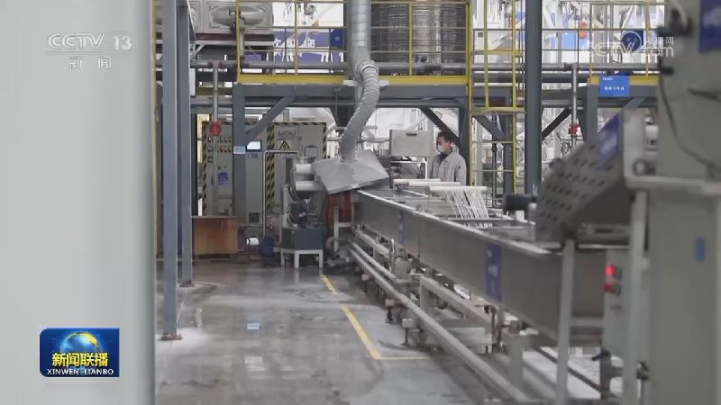
国务院新闻办公室今天（11月17日）举行新闻发布会，商务部、生态环境部等相关负责人介绍深入推进再生资源回收体系建设有关情况。针对家具、家电等不同回收需求，将发展“互联网+回收”、市场化上门清运等回收模式；针对动力电池、光伏组件、风机叶片等固废回收拆解，将研究制定新能源汽车动力电池数字身份证管理制度，鼓励发电企业建立退役设备回收体系，持续提升再生资源回收便利性、规范性。
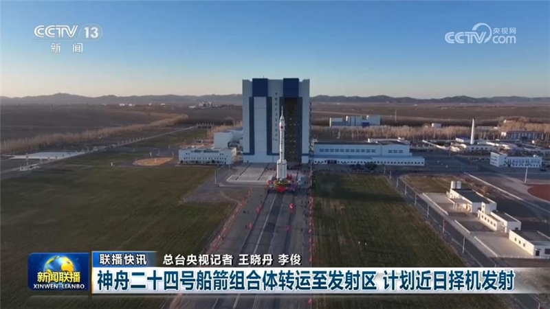
神舟二十四号船箭组合体转运至发射区 计划近日择机发射